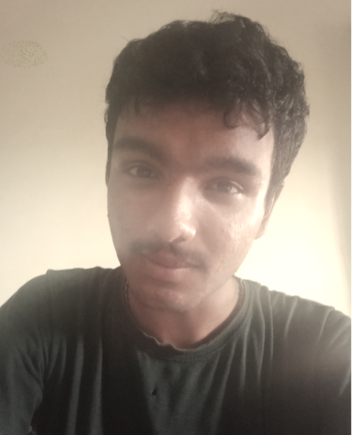

Nevin Skariah

Summary
I am a young and ambitious individual. My life journey has been a blend of fascinating experience in the field of Web Development and Programming
Education
- Secondary school - St. Mary's International School, Chikkamagalur, Karnataka.(2017-2019)
- High School - St. Francis School, Deoghar, Jharkhand (2020-2023)
- Btech Computer Science and Business System - Government Model Engineering College, Thrikkakara, Kerala(2024-2028)
Work Experience
-
Programme Solver and Coder
January 2017- Present
-
Learned and resolved Java programming language and DSA
-
Paved a learning way in perfecting Python.
-
Maintained proper footing in realising the true essence of coding via different programming language.
-
Web Developer - Fresher
September 2024 - Present
-
Learned and Innovated (via Udemy) Web Developing and its discipline through different portfolios and projects
-
Collaborated with Dr. Angela Yu in learning web bootcamp to its extreme level.
Credits
-
Scored 97/100 in ISC Board Computing and Programming.
-
Topped in District in 12th ISC Board (2024) with 95 percentage in overall Science stream.
-
Scored 94 percentile in JEE Mains 2024 (national examination conducted by NTA) and got qualified for JEE advance.
-
Got shortlisted under 47k rank in VITEEE exam and qualified it.
-
Got selected under 4k rank in KEAM examination.
Skills
-
Programmer:⭐️⭐️⭐️⭐️
-
Web Developer (Fresher):⭐️⭐️⭐️⭐️
-
Learning Skills:⭐️⭐️⭐️⭐️⭐️
Others